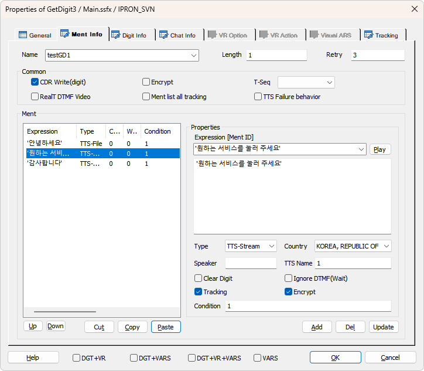
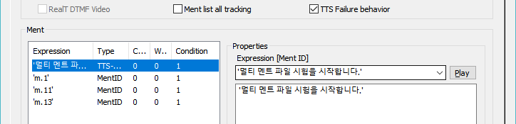
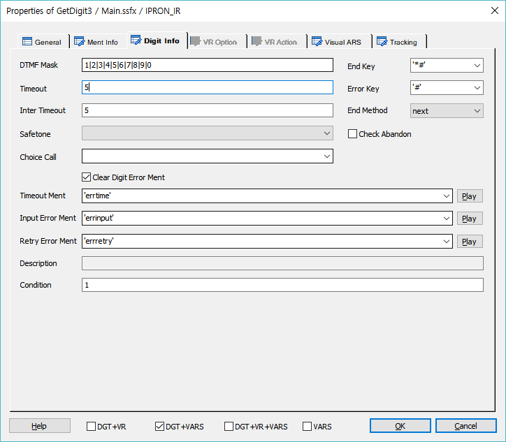
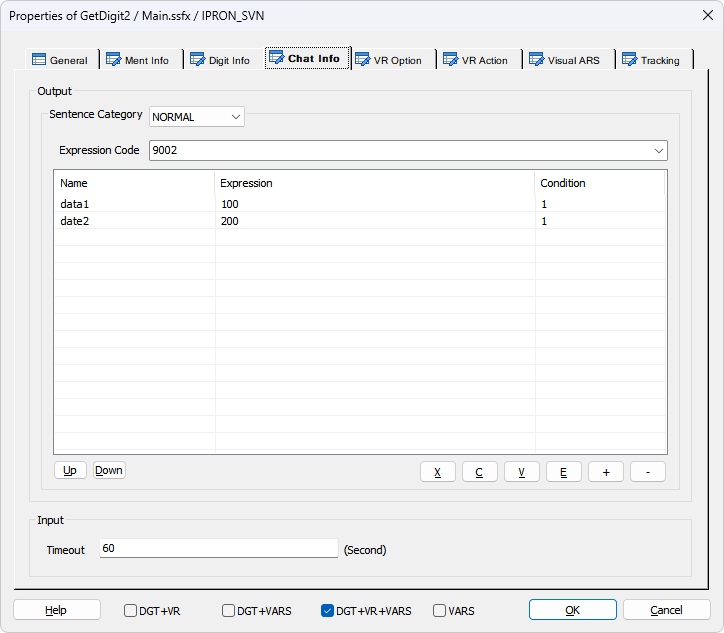
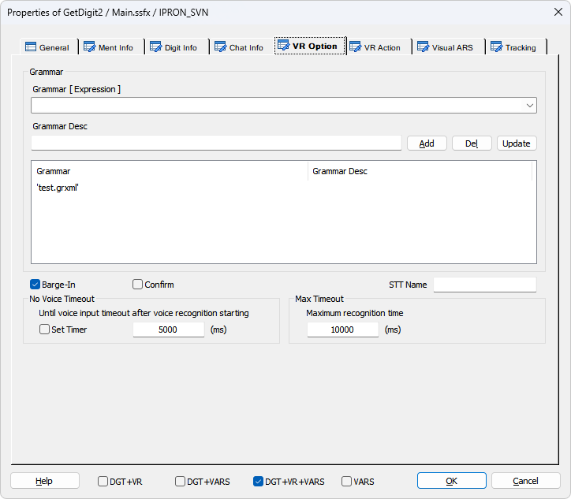
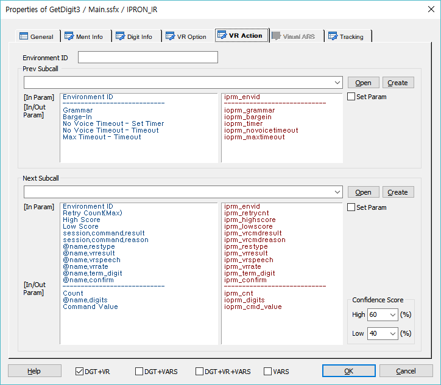
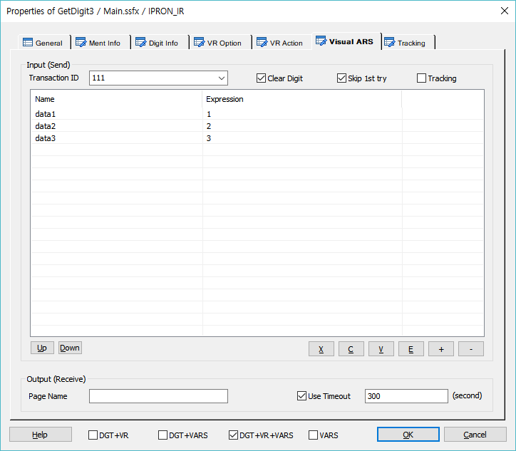
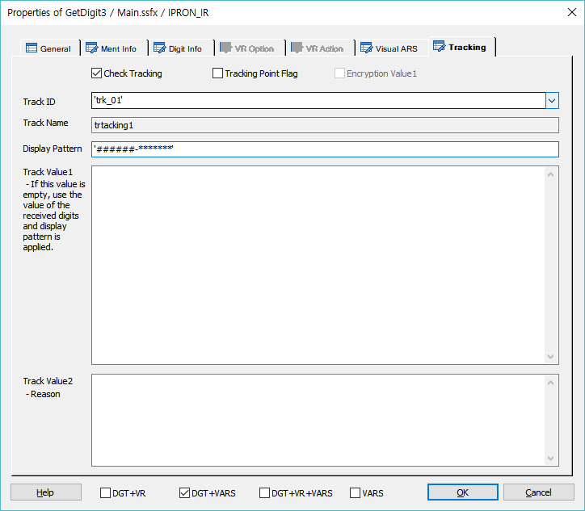

기본적으로 사용자가 입력한 DTMF를 받기 위한 아이템에 음성인식, 보이는 ARS를 동시에 받을 수 있는 collectdigit 기능을 제공한다.
* collectdigit 는 ForCus v5.1 이상 지원
ICON
PROPERTIES

Notes :
SLEE : Service Logic Execution Engine 의 약자로 SXML을 로딩하고 서비스 로직을 구동 제어 하는 서버
MCE : Media Control Engine 의 약자로 미디어 제어 서버(TDM, IP, WEB, ... ), 구명칭 TE
Name : DTMF를 받을 변수명을 지정 합니다.
Length : 입력 받을 DTMF의 길이를 지정 합니다.
Retry : 입력 오류시 재시도 횟수를 지정 합니다.
Common
CDR Write(digit) Check Box : 입력된 디지트를 CDR에 기록 여부를 체크 합니다.(체크하지 않으면 CDR값이 % 로 출력됩니다)
Realtime DTMF Video Check Box : PlayVideo가 영상을 Play중이고(PlayVideo는 비동기 모드로
동작) 동시에 GetDigit로 DTMF를 입력 받을 때 받은 디지트를 Play중인 영상에 실시간 으로 빠르게
Text Overlay 하기 위해서 MCE 에서 바로 VideoServer로 요청합니다.(SLEE가 디지트를 받아서
PlayVideo로 Text Overlay를 수행하게 되면 처리 속도가 느려집니다)
Encrypt Check Box : 입력된 디지트를 CDR에 기록 할 때 암호화 합니다.
Ment list all tracking Check Box : 멘트 리스트에 지정된 전체 멘트를 대상으로 트래킹을 처리합니다.(개별 멘트 트래킹보다 우선합니다.)
T-Seq :Timeout-Sequence의 약자로써 선택 멘트가 재생중 또는 재생된 후 DTMF의 입력이 없을 경우
Play Sequence를 지정 하여 그 인덱스의 멘트를 재생 할 수 있습니다. Play Sequence란 멘트 리스트에
멘트를 설정할 때 여러개의 멘트를 설정 할 수 있는데 첫번째 부터 순서적으로 1 베이스로 인덱스가
설정됩니다.(Ment 항목 가변 멘트('m.0','m.1')의 경우는 DefineMenu에서만 T-Seq가 적용되며, Play,
GetDigit에서는 적용되지 않으며, 멘트리스트의 순서대로 T-Seq가 적용됩니다.)
TTS Failure Behavior : 멘트 리스트에서 첫 번째 항목 멘트 타입이 "TTS Stream" 또는 "TTS File" 일 경우 체크 되었을 때 유효하며, 첫 번째 멘트인 TTS Play에서 TTS 서버와 연동이 실패인 경우 첫 번째 멘트 이후 설정된 멘트는(TTS Stream, TTS File 포함 모든 타입) 첫 번째 멘트인 TTS Play의 대체 멘트로 처리 됩니다.

SXML 태그 예제 : <playtts 태그 아래로 <if 태그 cond 에 session.command.result == _SLEE_FAILED_ 조건으로 TTS 에러를 체크하고 에러면 'm.1', 'm.11', 'm.13'대체 멘트를 Play 한다.
이 예제는 보이는 ARS 또는 음성인식 사용 예제라 대체 멘트 cond에 session.command.reason == _TE_FINISH_ 조건도 비교 한다. 다만 첫 번째 대체 멘트는 무조건 Play 해야 하기 때문에cond = "1" 이다.
Expression [Ment ID] : 재생할 음성 파일을 지정합니다.
- DefineMent Item에 정의된 MentID가 콤보박스 리스트로 제공되며 리스트에서 멘트를 선택 할 수
있습니다.
- 멘트 파일 이름이나 MentID가 들어있는 변수를 사용 할 수 있습니다.
- 가변 멘트를 처리 할 수 있습니다. 가변 멘트는 여러개의 멘트를 한번에 재생 합니다. 멘트는 작은
따옴표로 묶고 멘트와 멘트 사이는 콤마로 구분 합니다.( 예 : 'Ment1','Ment2','Ment3' )
- 연산식을 통해 멘트 이름을 조합 할 수 있습니다. 단, 변수와 문자를 같이 연산 할 수는 없습니다.
( 예 : gs_TrData.BI09ZZ.from.O_27_합계금액 * 1 )
- 멘트 리스트에 여러개의 멘트를 등록하여 순서대로 재생 할 수 있습니다.
* Expression 아래의 넓은 Editbox는 Type이 MentID일 경우에는 Ment Description이 출력되고 TTS일 경우에는 TTS 텍스트 를 편집할 수 있습니다.
Type : 재생 할 멘트의 타입을 설정 합니다.(MentID, File 타입을 제외한 모든 타입은 Country항목의 영향을 받아서 각 언어별로 멘트를 재생 합니다)
Play Button : 멘트 리스트에서 선택한 멘트가 MentID로 설정 되었다면 재생 합니다.(Tools>Options>Debug
>Ment Path 설정 필요, 단, 가변멘트일 경우 현재는 재생 불가)
Stop Button : 현재 재생 중인 멘트를 중지 합니다.
Country : 국가별 언어를 설정하여 해당 타입으로 멘트를 재생할 경우 각 언어에 맞게 멘트를 재생 합니다.
- MentID, File 타입을 제외한 모든 타입 선택시 Country항목이 활성화 됩니다.
- 현재 지원하는 언어는 한국어, 영어, 중국어, 베트남어, 몽골어를 지원 합니다.
Speaker : Ment Type이 TTS-Stream, TTS-File인 경우 TTS Speaker ID(숫자)를 설정합니다.(Speaker ID는 TTS 매뉴얼 참조)
TTS Name : Ment Type이 TTS-Stream, TTS-File이면 TTS Name 을 설정하여 TTS 서버를 선택할 수 있습니다.
- 값을 지정하지 않으면 기본 TTS 서버로 처리 됩니다.
- v5.x : 'ADT' 로 지정하면 TTS Adapter 를 통한 TTS 연동을 지원합니다.(Multi TTS 지원 불가)
- v6.0 이상 : "SWAT>IVR관리>미디어관리>TTS 관리" 에 등록한 Name 을 지정하면 TTS Adapter 를 통한 Multi TTS 연동을 지원합니다.
Clear Digit Check Box : 재생 전에 디지트 버퍼를 삭제 할지를 설정 합니다.(재생 전에 발생된 디지트를
버퍼에서 삭제 하지 않으면 재생 하려고 하는 멘트가 바로 중단 됩니다)
Ignore DTMF Check Box : 재생 중에 DTMF 입력을 무시 할지를 설정 합니다. DTMF 를 무시하면 전화
다이얼을 눌러도 멘트가 중지 되지 않기 때문에 멘트가 끝나야 다음 Flow처리를 위한 DTMF 입력을
받습니다.
Tracking Check Box : 멘트별로 트래킹을 처리합니다.
Encrypt Check Box : 멘트별로 내용을 암호화 하여 AI 시나리오일 경우 Dialogue CDR에 적용하며 Tracking이 함께 체크된 경우 시나리오 타입에 관계없이 Tracking CDR에도 적용합니다.(v6.2 이상)
Condition : 각 멘트의 재생 조건을 설정 합니다.
<GetDigit 아이템 Ment Play 내부 처리>
Visual ARS 사용 : 보이는 ARS 사용 시 멘트 리스트에 멘트가 한개 이상일 경우 두 번째 멘트 부터 이전 멘트가 정상 Play 되었는지 체크하고 Ment Play를 하는 조건을 태그에 생성 한다.
Ment Play 중 보이는 ARS 이벤트가(사용자 화면에서 버튼 누름 또는 입력) 발생 할 경우 다음 Ment를 Play 하지 않고 바로 collectdigit 처리를 하기 위함 이다.
SXML 태그 예제: 두 번째 멘트 부 터 cond 에 session.command.reason == _TE_FINISH_ 조건으로 이전 멘트가 정상 Play 되었는지 체크 한다.
음성인식 사용 : 음성인식 사용 시 멘트 리스트에 멘트가 한개 이상 일 경우 두 번째 멘트 부터 이전 멘트가 정상 Play 되었는지 체크 하고 Ment Play를 하는 조건을 태그에 생성 한다.
Ment Play 중 음성인식 이벤트가(사용자가 발성 함) 발생 할 경우 다음 Ment를 Play 하지 않고 바로 collectdigit 처리를 하기 위함 이다.(태그 예제는 "Visual ARS 사용"과 동일 하다)
Ment Play 에러 : Play 시에 에러가 발생할 경우(파일 없음 또는 기타 시스템 에러) 나머지 멘트 Play 및 getdigit 또는 collectdigit를 스킵 하는 기능 이다. 빌드 옵션에서 "Skip digit input at play error in getdigit item" 옵션 설정을 해야 작동 한다.
Play Error에 대한 다른 분기 처리가 필요 한 경우에는 "Error" 이벤트 링크를 사용 할 수 있다.
SXML 태그 예제: 첫 번째 <play 태그 아래 <if 태그 cond 에 session.command.result == _SLEE_FAILED_ 조건으로 Play 에러를 체크 하고 에러면 Play 아이템의 마지막으로 이동 한다.
Up Button : 선택한 멘트를 위로 이동 합니다..
Down Button : 선택한 멘트를 아래오 이동 합니다..
Cut Button : 선택한 리스트를 잘라냅니다.(Ctrl+X)
Copy Button : 선택한 리스트의 내용을 복사 합니다.(Ctrl+C)
Paste Button : 복사한 리스트의 내용을 붙여넣기 합니다.(Ctrl+V)
Add Button : 멘트 리스트에 지정한 멘트를 추가 합니다.
Del Button : 선택한 멘트를 멘트 리스트에서 삭제 합니다.
Update Button : 선택한 멘트의 내용을 갱신 합니다.
CollectDigit : GetDigit 아이템에서 DTMF + 음성인식 + 보이는 ARS를 동시에 처리하는 기능
DGT+VR Check Box : 디지트 + 음성인식 동시 처리
DGT+VARS Check Box : 디지트 + 보이는 ARS 동시 처리
DGT+VR + VARS Check Box : 디지트 + 음성인식 + 보이는 ARS 동시 처리
VARS Check Box : 보이는 ARS 단독 처리

Dtmf Mask : 입력 받을 DTMF의 Masking 처리를 하여 Masking된 디지트만 입력 받습니다.
- 디지트 + 구분자( | ) + 디지트 의 형식으로 입력 하고 공백이 있으면 안되며, 문자 형식형이 아닙니다.
( 예 : 04|02|03|11|12|15 이면 "02", "03", "04", "11", "12", "15"가 아니면 입력 오류입니다. MCE(TE)에는
"0|1|2|3|4|5"의 DTMF Mask가 전달 됩니다.)
Endkey : DTMF 입력 도중 종료 할 수 있는 DTMF를 지정 합니다.(session.command.term_digit에 누른 값이 입력됨)
Errorkey : DTMF 입력 도중 지정한 에러키 "*" 또는 "#" 이 입력되면 Input Error 처리를 합니다.(session.command.term_digit에 누른 값이 입력됨)
EndKey에 지정된 키만 ErrorKey로 지정 할 수 있다.(ErrorKey는 EndKey 보다 우선 한다)
ErrorKey 에 값은 상수로만 지정할 수 있어 ErrorKey 를 지정하면 EndKey 도 상수로만 지정해야 한다.
Condition : GetDigit 수행 조건을 지정 합니다.
Timeout : 설정한 DTMF의 자릿수 만큼 입력될 DTMF의 기다리는 최대 시간을 설정 합니다.
Inter Timeout : 2자리 이상 DTMF를 입력 받을 시 디지트와 디지트 사이의 Timeout을 설정 합니다.
End Method : DTMF 입력 도중 완료 또는 중단 되었을 경우 다음 Flow로 넘어갈지 종료 할지를 설정 합니다.
Safetone : Safetone을 설정 합니다.
Check Abandon Check Box : 포기호 처리시 체크 합니다.
Choice Call : Multi Call 에서 콜을 선택 합니다.(2개 콜 까지 가능, GetChannel 로 생성)
Clear Digit Error Ment Check Box : Error Ment Play 시에 입력된 DTMF를 버퍼에서 제거하여 Error Ment가 Skip되지 않도록 합니다.
Timeout Ment : Timeout 발생 시 재생 할 멘트를 설정 합니다.
Input Error Ment : 입력오류 발생 시 재생 할 멘트를 설정 합니다.
Retry Error Ment : 재 시도 횟수 초과 시 재생 할 멘트를 설정 합니다.
Play Button : Ment항목에 설정된 멘트를 재생 합니다.
Stop Button : 재생 중인 멘트를 중지 합니다.
Description : Timeout Ment, Input Error Ment, Retry Error Ment 에 지정된 멘트의 설명이 있다면 표시 합니다.
 Chat Info
Chat Info
* ForCus v6.0 이상 지원

※ Chat 지원 시나리오 설정을 했을 때 Chat Info 탭이 활성화 됩니다.
Sentence Category : Chat Info는 Show Chat 시 문장과 함께 Chat 서버로 전송되는데 문장 카테고리별로 설정이 가능합니다.
Expression Code : Chat Text 로 표현하지 못하는 이미지나 아이콘 등을 미리 정의한 코드입니다.
※ 리스트에 입력된 data1, data2는 Expression Code 8000 의 상세 코드입니다.
※ Chat 콜 일때 Chat Text 출력은 Ment Info 탭 > Ment Expression 에 입력된 MentID 의 Description 또는 TTS 인 경우 합성 문자열이 출력 됩니다.
Timeout : Get Chat 타임아웃을 설정합니다.(기본 60초)
※ Chat 콜 일때 Chat Text 인입은 GetDigit 를 이용하기 하기 때문에 GetDigit 결과와 같은 변수를 사용합니다.(@name.digits)

Grammar
· 음성인식을 하기 위한 그래머 및 연속어 인식의 경우 결과 변수를 지정 합니다.
Grammar [ Expression ] : 음성인식 그래머를 지정 합니다. 그래머는 문자형으로 입력 할 경우 여러개의
그래머를 리스트에 지정 가능합니다. 변수형으로 지정할 경우는 하나만 가능 합니다. 대신 변수에 여러 개의
그래머를 구분자 "|" 를 가지고 미리 지정 가능 합니다. 단, 문자형과 변수형은 리스트에 같이 넣을 수
없습니다.(변수에 여러개 의 그래머 지정 시 예 : 'file:test1.grxml | file:test2.grxml | file:test3.grxml')
♣ 그래머 타입에 따른 그래머 입력 방법
file - Nuance Engine 이 설치된 장비내에 위치하는 Grammar
builtin - 설치된 언어팩에 내장된 Grammar(각 언어팩에 첨부된 레퍼런스 참조. 한글팩의 경우
Supplement - Korean ko-KR.pdf 참조)
mcmfile - MCM이 설치된 장비에 위치하는 Grammar(비권장)
사용 시에는 그래머 앞에 사용하고 ":"으로 구분한다.
사용 예 : 'file:testGram.grxml', 'builtin:grammar/currency?language=ko-KR', 'mcmfile:testGram.grxml'
Grammar Desc : 지정한 그래머의 설명을 입력 합니다.
Add Button : 지정한 그래머를 그래머 리스트에 추가 합니다.(문자형으로 지정시 여러 개, 변수형으로
지정시 한개 만 지정 가능)
Del Button : 선택한 그래머를 삭제 합니다.
Update Button : 선택한 그래머의 내용을 갱신 합니다.
Barge-In Check Box : 음성인식 시 Barge-In 을 처리할 것인지 유무를 지정 합니다.
Confirm Check Box : 음성인식 결과에 대한 사용자 질의를 음성인식으로 할때 체크 합니다. 예를 들면 "브리지텍"
이라는 음성인식 결과에 대해 "브리지텍이 맞습니까? 예 아니오로 대답해 주세요" 라고 음성인식을 할때 사용하며,
이 음성인식의 결과인 "예, 아니오" 에 따라서 "브리지텍"이라고 음성인식을 한 결과의 VR_REJECT 라는 항목의
갱신 자료로 사용 됩니다.(데이터의 갱신은 VERIFY Item을 사용 합니다.)
STT Name : 등록된 STT Name 입력으로 Multi STT 를 지원합니다.(SWAT>IVR관리>미디어관리>STT 관리)(v6.0 이상)
No Voice Timeout
Set Timer Check Box : Set Timer 체크가 되면 음성인식 서버가 시작(voicerecognizestart 태그) 된 후 바로 타이머가 동작하며 체크되지 않으면 음성인식 처리 태그인 voicerecognizeresult 태그 에서 타이머 체크가 시작됩니다.
· Timeout(ms)은 음성이 입력 되기 까지의 타입아웃을 지정 합니다.
- 타임아웃 시간을 지정 하지 않으면 서버 기본 타임아웃이 적용 됩니다.(milisecond 단위)
Max Timeout
· Timeout(ms)은 음성인식 서버가 음성인식을 시작 한 후 인식의 결과가 나오기 까지의 최대 시간을 지정 합니다.(milisecond 단위이며, 기본 값은 10초 입니다)

Environment ID : 환경설정 값을 읽어오기 위한 ID
Prev Subcall
· 음성인식을 시작하기 전에 호출되는 시나리오 파일을 지정 합니다.
Open Button : Prev Subcall 시나리오를 오픈 합니다.
Create Button : Prev Subcall 시나리오를 생성 합니다.
Set Param Check Box : 호출 되는 시나리오의 파라미터를 설정 합니다.
Open + Set Param Button : Prev Subcall 시나리오를 오픈 하면서 In/Out 파라미터를 설정 합니다.
Create + Set Param Button : Prev Subcall 시나리오를 생성 하면서 In/Out 파라미터를 설정 합니다.
[In Parameter]
iprm_envid : 환경파일을 읽기 위한 세션아이디
[In/Out Parameter]
ioprm_grammar : VR Option 탭에 지정한 음성인식 그래머
ioprm_bargein : VR Option 탭에 지정한 음성인식 바진처리 유무
ioprm_timer : VR Option 탭에 지정한 No Voice Timeout 사용 유무
ioprm_novoicetimeout : VR Option에 지정한 No Voice Timeout
ioprm_maxtimeout : VR Option에 지정한 Max Timeout
Next Subcall
· 음성인식 결과 후에 호출되는 시나리오 파일을 지정 합니다.
· SubCall에서 시나리오를 처리 후 리턴할 때 ioprm_cmd_value 에 "1"을 넣으면 음성인식을 재시도 합니다.
· SubCall에서 시나리오를 처리 후 리턴할 때 ioprm_digits에 음성인식과 대응되는 디지트 값을 입력하면
기존의 디지트로 처리하는 GetDigit뒤의 시나리오 플로우를 수정하지 않아도 됩니다.
Confidence Score High : 음성인식 신뢰도 높은 값을 지정 합니다.(인식성공으로 처리 하거나 사용자
Confirm 을 받을 때 사용)
Confidence Score Low : 음성인식 신뢰도 낮은 값을 지정 합니다.(인식실패로 처리할 때 사용)
Open Button : Next Subcall 시나리오를 오픈 합니다.
Create Button : Next Subcall 시나리오를 생성 합니다.
Set Param Check Box : 호출 되는 시나리오의 파라미터를 설정 합니다.
Open + Set Param Button : Next Subcall 시나리오를 오픈 하면서 In/Out 파라미터를 설정 합니다.
Create + Set Param Button : Next Subcall 시나리오를 생성 하면서 In/Out 파라미터를 설정 합니다.
[In Parameter]
iprm_envid : VR Action 탭에 지정한 환경파일을 읽기 위한 세션아이디
iprm_retrycnt : Ment Info 탭에 지정한 Retry
iprm_highscore : VR Action 탭에 지정한 음성인식 결과를 성공으로 처리할 신뢰도 값
iprm_lowscore : VR Action 탭에 지정한 음성인식 결과를 실패로 처리할 신뢰도 값
iprm_vrcmdresult : 음성인식 결과(_SLEE_SUCCESS_, _SLEE_FAILED_)
iprm_vrcmdreason : 음성인식 실패의 원인 값(_TE_TIMEOUT_등)
iprm_restype : 결과 타입(DTMF:"D", 음성인식:"S", 보이는 ARS : "V")
iprm_vrresult : 음성인식 결과 문자
iprm_vrspeech : 음성인식 발성 문자열
iprm_vrrate : 음성인식 결과 신뢰도 값
iprm_term_digit : DTMF입력의 경우 입력된 종료 디지트 값(사용 않함)
iprm_confirm : 음성인식 결과에 대한 사용자 질의를 음성인식 할때 체크한 값입니다. 예를 들면 "브리지텍" 이라는 음성인식 결과에 대해 "브리지텍이 맞습니까? 예 아니오로 대답해 주세요" 라고 음성인식을 할때 사용 합니다.
[In/Out Parameter]
iprm_cnt : 현재 재시도 카운트
ioprm_digits : GetDigit의 시스템 변수인 입력 디지트 변수
ioprm_cmd_value : Next Subcall후에 음성인식을 재시도 할 명
* ForCus v5.1 이상 지원

· 보이는 ARS(VARS) 전송 전문(Json 포멧)을 입력 합니다. 수신 전문이 없는 전송 전용 이지만 GetDigit 아이템의 VARS는 collectdigit와 연동 하기 때문에 전송/수신이 모두 있다고 보면 된다. 단, Play의 VARS와 연동 하는 경우 GetDigit의 VARS는 요청하지 않을 수도 있다.(요청 전문의 데이터가 없으면 VARS 태그 생성 않함)
보이는 ARS의 메뉴 입력이 있는 화면에서 입력이 있을 경우(메뉴 선택) 입력에 대한 수신처리는 collectdigit 에서 입력 처리가 된다.(Digit 입력과 같은 @name.digits 시스템 변수에 값 할당, 보이는 ARS 수신 전문 digits에 값이 할당 되어 있음)
Transaction ID : TB 에서 전문을 전송할 대상(보이는 ARS-Adapter)을 찾기 위한 서버 키 입니다.
Clear Digit Check Box : 보이는 ARS에서 메뉴를 입력 받을 때 GetDigit와 마찬가지로 디지트 버퍼에 값이 들어가게 할 수 있는데 이 버퍼를 초기화한다.
Skip 1st Try Check Box : 이전 아이템에서(Play 아이템) 보이는 ARS요청을 하고 GetDigit 아이템에서는 첫 번째 시도에서는 보이는 ARS요청을 하지 않고 collectdigit를 이벤트를 기다리다가 결과 이벤트가 Timeout, Input Error등 일 때 재 시도 카운트가 있을 경우에 다시 보이는 ARS요청을 하고 collectdigit이벤트를 기다린다.(단, 보이는 ARS요청 데이터가 없으면 처리하지 않는다.)
Tracking Check Box : 보이는 ARS에 대한 트래킹 태그를 생성한다.
· 보이는 ARS 수신 정보를 입력 합니다.
수신 전문 정보는 없지만 전문이 오면 ForCus Engine(SLEE) 에서 전문을 시스템 변수 형식으로 변수를 만들어 제공합니다.
ex) @name.수신 전문 키(필드) : gstGetDgt2.Name, gstGetDgt2.Addr
Page Name : 실제 웹 페이지 이름을 입력합니다.
Use Timeout Check Box : 입력 타임아웃 사용 여부를 체크 합니다.
Use Timeout : 타임아웃을 시간을 입력합니다.

입력되는 Digit에 대한 트래킹을 처리합니다.
Check Tracking Check Box : Tracking을 사용 할 것인지를 체크합니다.
Tracking Point Flag Check Box : 특별한 Tracking Flag를 설정하여 SWAT에서 트래킹 시에 이 플래그가 설정된 항목만 트래킹 할 수 있습니다.
Encryption Value1 Check Box : Track Value1 속성 데이터에 대해서 암호화 처리를 합니다.
Track ID : 정의한 Track ID를 선택합니다.
- DefineTrack Item에 정의된 Track ID가 콤보박스 리스트로 제공됩니다.(Type이 없거나, GetDigit인 경우)
Track Name : Track ID를 선택하면 같이 정의된 이름을 출력합니다.(SWAT에서 이 이름으로 트랙킹 시에 사용합니다.)
Display Pattern : 입력된 디지트를 화면에 출력 시 사용하는 패턴 입니다.(Track Value1 항목의 값이 비어 있어야 적용됩니다.)
[Pattern]
Track Value1 : 트래킹 시에 사용할 값을 입력 합니다.(여기에 값을 입력 하지 않으면 GetDigit 시 입력받은 디지트를 값으로 적용합니다.)
Track Value2 : 트래킹 시에 사용할 값을 입력 합니다.(결과에 대한 Reason값)
RESULT
· 처리 결과 세션 변수
session.command.result : 처리 성공(_SLEE_SUCCESS_), 실패(_SLEE_FAILED_)
session.command.reason : 실패면 실패 오류코드(시스템 상수 참조)
· 아이템 속성 변수(@name 은 Name 항목에서 지정한 이름)
@name.term_digit : 사용자가 입력한 입력 종료 키
@name.digits : 입력 종료 키를 제외하고 입력된 모든 DTMF 값, 보이는 ARS 입력 값이 한자리 이고 숫자인 경우(또는 Chat 일 때 입력된 Text(v6.0 이상) )
@name.restype : 결과타입: 'D'(디지트) 'S'(음성인식) 'V'(보이는 ARS)
@name.vrresult : 음성인식 결과
@name.vrspeech : 음성인식 발성 문자열
@name.vrrate : 음성인식인 경우 인식률
@name.confirm : 결과 Confirm Mode : ALWAYS, IF_NECESSARY, NEVER
@name.mrcpid : MRCP 프로토콜을 사용하는 음성인식의 경우 사용한 MRCP ID
RELATED